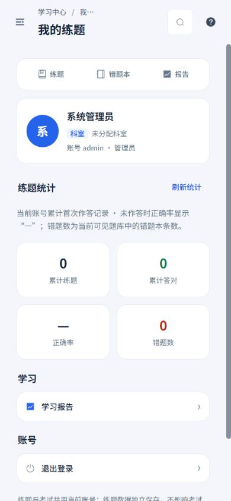
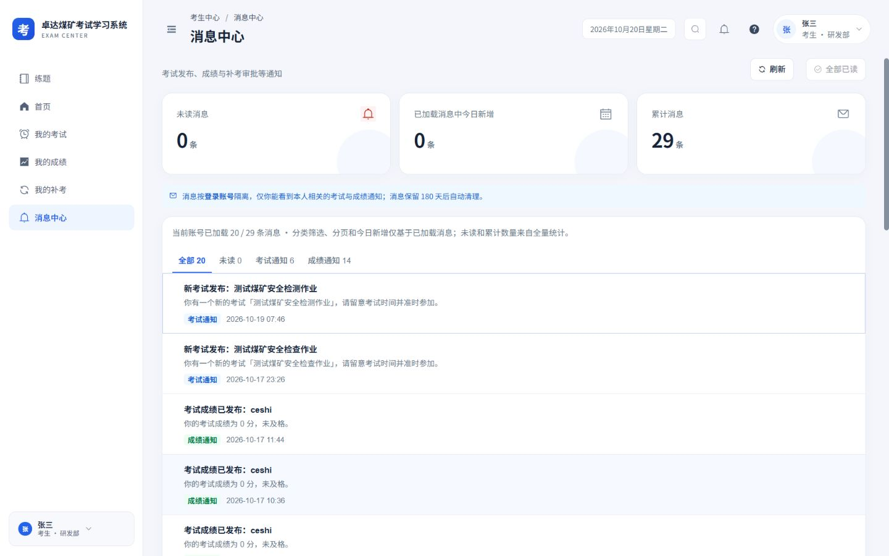
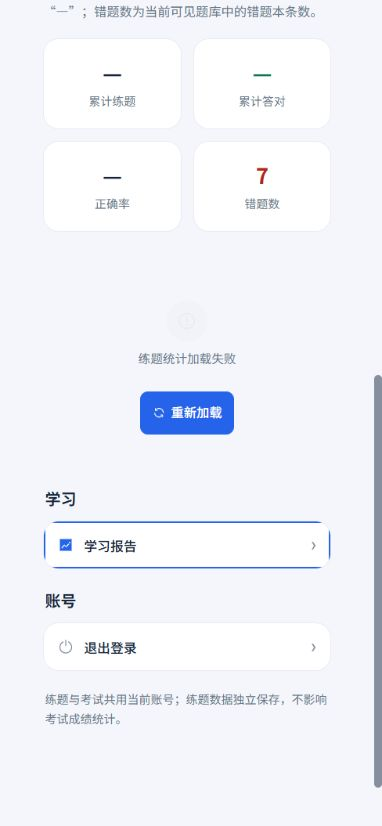
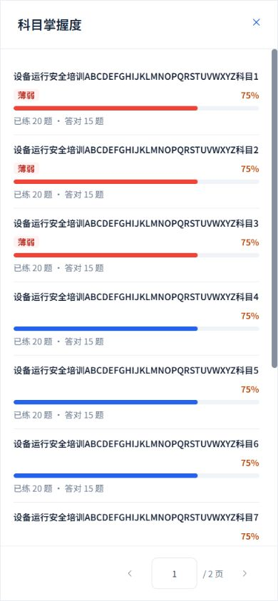
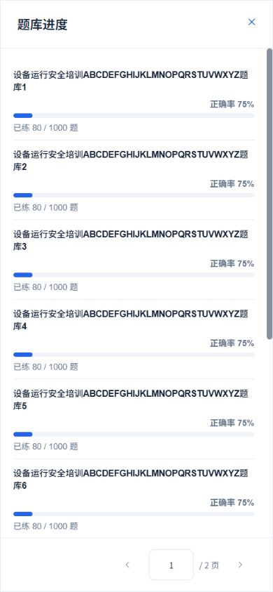

2026-10-20 · Workbuddy 01 · 本轮本地实施：消息中心、我的练题、学习报告
统一阅读、统计与失败恢复
沿用白侧栏、浅灰蓝底、蓝色操作与16 px圆角卡片。三页补齐手机长内容、完整列表、空状态和就地重试；保留现有路由、菜单权限、功能开关及账号隔离。
本轮落地
- 消息中心增加刷新、单条已读失败提示及重试，保留原未读状态；单条与全部已读互斥，操作期间禁止刷新。详情跟随新读取的数据更新，完整正文保留段落，长名称换行。
- 消息分类与分页明确限于实际已加载数据；未读数和累计数取全量接口。读取失败和读取中显示未知值，避免显示为真实零记录。
- 我的练题独立处理总览与错题本读取，单个接口失败不隐藏另一个成功来源；统计支持刷新，功能未开放有单独说明。长姓名、账号及科室完整换行；退出确认防重复，取消保留会话。
- 学习报告的总览、趋势、科目、题库和每日任务分别显示错误并独立重试；趋势重试保持原请求的7天或30天。无记录显示统一空状态及返回练题入口。
- 报告顶部统一白卡；科目、题库完整列表在手机全屏显示，正文滚动、分页固定。长名称完整阅读，分页与任务按钮至少44 px，保留原题库跳转和访问权限。
- 累计练题与正确率按本人首次作答记录；错题数为当前可见题库中的错题本条数。未作答正确率显示“—”，失败统计不显示0。
实际页面与数据范围
本地实际账号只读核验：考生消息接口返回20 / 29条，未读0条、已加载消息中今日新增0条；页面明确标注分类、分页及今日新增只基于这20条。管理员本人练题记录为0，正确率显示“—”。
管理员直接访问消息中心被现有菜单权限重定向到首页，权限未放宽；考生消息仅打开原本已读的通知，未改变真实消息的已读状态。核验结束已恢复管理员账号。





失败与完整列表样例
以下为真实Vue组件配合独立模拟接口，包含长名称、多页列表及失败响应；数字均为样例，未写入业务接口。









验证结果
- 4个测试文件共56项通过，覆盖失败恢复、单条与批量互斥、功能关闭、部分成功、退出取消、原目标趋势重试及现有考生页面行为。
- 33组布局测量覆盖320×740、390×844、844×390、1440×900；未发现整页或弹窗横向溢出，所测弹窗底栏均在视口内。完整科目第二页与题库列表均核验。
- TypeScript、生产构建、设计脚本语法及Git差异空白检查通过。设计目录保留62个现行条目及稳定ID，补充这三页和对应弹窗说明。
- 本轮未修改服务端、角色授权、考试成绩、考务和安全配置；真实数据仅只读核验，失败及写入流程使用隔离样例。